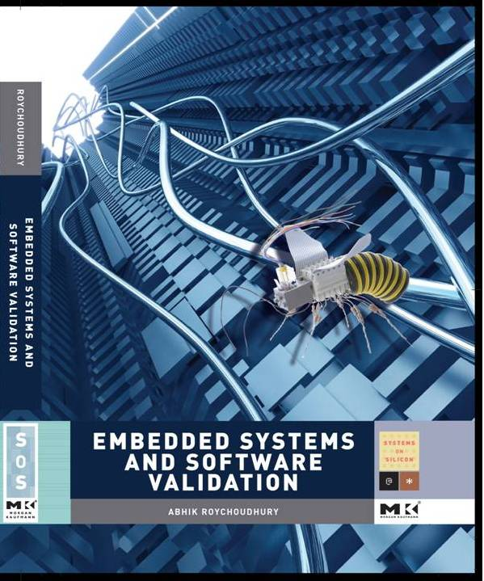

- Hardcover: 272 pages
- Author: Abhik Roychoudhury
- Publisher: Morgan Kaufmann (Elsevier)
- Publication Date: June 12 2009
- Language: English
- ISBN-10: 0123742307
- ISBN-13: 978-0123742308
Textbook on Embedded Systems and Software Validation
|  |
Instructors adopting the book can access the power-point slides from this password protected website.
Here is a sample module (with lecture notes in PDF) using the textbook.
Adoption If you are using the book in your module, please let the author know. We will pass the powerpoint slides to you.
|
Modern embedded systems are a part of every modern electronic device, ranging from toys to traffic lights to nuclear power plant controllers. These systems help run factories, manage weapon systems and enable the worldwide flow of information, products and people. Unlike other computer systems such as those that operate personal computers, embedded systems must typically run error-free for years or even decades with little or no opportunity to reboot the system or fix problems. Such systems typically consist of a heterogeneous collection of processors, specialized memory subsystems and partially programmable or fixed-function components. This heterogeneity, coupled with issues such as hardware/software partitioning, mapping and scheduling leads to a large number of design possibilities, making both functionality and performance validation of such systems a difficult problem and an imperative issue.
Roychoudhury guides readers through a host of debugging and verification methods critical to providing reliable software and systems applications. Readers will find practical information and guidance including:
Preface (pdf file)
1 Introduction 7
2 Model Validation 13
2.1 Platform vs System Behavior . . . . . . . . . . . . . . . . . . 15
2.2 Criteria for Design Model . . . . . . . . . . . . . . . . . . . . 17
2.3 Informal Requirements: A Case Study . . . . . . . . . . . . . 19
2.3.1 The Requirements Document . . . . . . . . . . . . . . 21
2.3.2 Simplification of the Informal Requirements . . . . . . 21
2.4 Common Modeling Notations . . . . . . . . . . . . . . . . . . 24
2.4.1 Finite State Machines (FSM) . . . . . . . . . . . . . . 24
2.4.2 Communicating FSMs . . . . . . . . . . . . . . . . . . 29
2.4.3 Message Sequence Chart based Models . . . . . . . . . 36
2.5 Remarks about Modeling Notations . . . . . . . . . . . . . . . 48
2.6 Model Simulations . . . . . . . . . . . . . . . . . . . . . . . . 52
2.6.1 FSM simulations . . . . . . . . . . . . . . . . . . . . . 53
2.6.2 Simulating MSC-based System Models . . . . . . . . . 59
2.7 Model-based Testing . . . . . . . . . . . . . . . . . . . . . . . 64
2.8 Model Checking . . . . . . . . . . . . . . . . . . . . . . . . . . 73
2.8.1 Property Specification . . . . . . . . . . . . . . . . . . 74
2.8.2 Checking procedure . . . . . . . . . . . . . . . . . . . . 90
2.9 The SPIN Validation Tool . . . . . . . . . . . . . . . . . . . . 101
2.10 The SMV Validation Tool . . . . . . . . . . . . . . . . . . . . 106
2.11 Case Study: Air Traffic Controller . . . . . . . . . . . . . . . . 109
2.12 References . . . . . . . . . . . . . . . . . . . . . . . . . . . . . 112
2.13 Exercises . . . . . . . . . . . . . . . . . . . . . . . . . . . . . . 113
3 Communication Validation 117
3.1 Common Incompatibilities . . . . . . . . . . . . . . . . . . . . 120
3.1.1 Sending/receiving signals in different order . . . . . . . 121
3.1.2 Handling a different signal alphabet . . . . . . . . . . . 123
3.1.3 Mismatch in data format . . . . . . . . . . . . . . . . . 126
3.1.4 Mismatch in data rates . . . . . . . . . . . . . . . . . . 128
3.2 Converter Synthesis . . . . . . . . . . . . . . . . . . . . . . . . 130
3.2.1 Representing Native Protocols and Converters . . . . . 130
3.2.2 Basic ideas for Converter synthesis . . . . . . . . . . . 132
3.2.3 Various strategies for protocol conversion . . . . . . . . 140
3.2.4 Avoiding no-progress cycles . . . . . . . . . . . . . . . 142
3.2.5 Speculative transmission to avoid deadlocks . . . . . . 143
3.3 Changing a working design . . . . . . . . . . . . . . . . . . . . 147
3.4 References . . . . . . . . . . . . . . . . . . . . . . . . . . . . . 149
3.5 Exercises . . . . . . . . . . . . . . . . . . . . . . . . . . . . . . 149
4 Performance Validation 151
4.1 The Conventional Abstraction of Time . . . . . . . . . . . . . 153
4.2 Predicting Execution Time of a Program . . . . . . . . . . . . 158
4.2.1 WCET Calculation . . . . . . . . . . . . . . . . . . . . 161
4.2.2 Modeling of Micro-architecture . . . . . . . . . . . . . 175
4.3 Interference within a Processing Element . . . . . . . . . . . . 186
4.3.1 Interrupts from Environment . . . . . . . . . . . . . . 186
4.3.2 Contention and Preemption . . . . . . . . . . . . . . . 189
4.3.3 Sharing a Processor Cache . . . . . . . . . . . . . . . . 194
4.4 System level communication analysis . . . . . . . . . . . . . . 199
4.5 Designing Systems with Predictable Timing . . . . . . . . . . 203
4.5.1 Scratchpad Memories . . . . . . . . . . . . . . . . . . . 203
4.5.2 Time-triggered Communication . . . . . . . . . . . . . 208
4.6 Emerging applications . . . . . . . . . . . . . . . . . . . . . . 211
4.7 References . . . . . . . . . . . . . . . . . . . . . . . . . . . . . 212
4.8 Exercises . . . . . . . . . . . . . . . . . . . . . . . . . . . . . . 213
5 Functionality Validation 217
5.1 Dynamic or Trace-based Checking . . . . . . . . . . . . . . . . 220
5.1.1 Dynamic Slicing . . . . . . . . . . . . . . . . . . . . . . 225
5.1.2 Fault Localization . . . . . . . . . . . . . . . . . . . . . 235
5.1.3 Directed Testing Methods . . . . . . . . . . . . . . . . 242
5.2 Formal Verification . . . . . . . . . . . . . . . . . . . . . . . . 246
5.2.1 Predicate Abstraction . . . . . . . . . . . . . . . . . . 250
5.2.2 Checking via Abstraction Refinement. . . . . . .259
5.2.3 Combining Formal Verification with Testing . . . . . . 267
5.3 References . . . . . . . . . . . . . . . . . . . . . . . . . . . . . 271
5.4 Exercises . . . . . . . . . . . . . . . . . . . . . . . . . . . . . . 272
Last updated 31 March 2010.